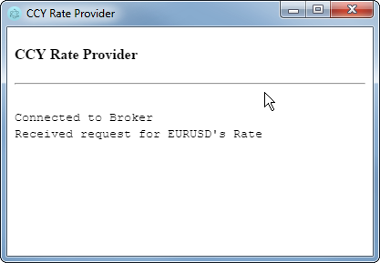
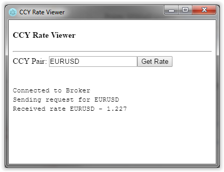
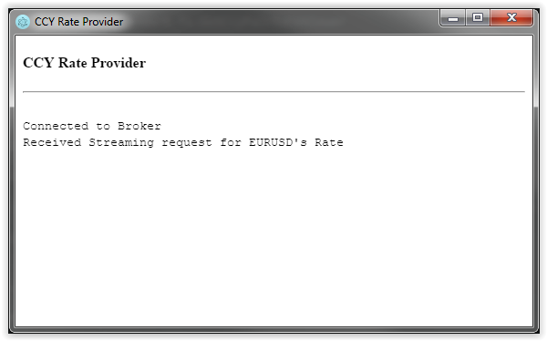
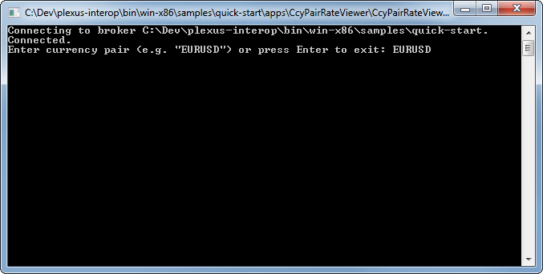
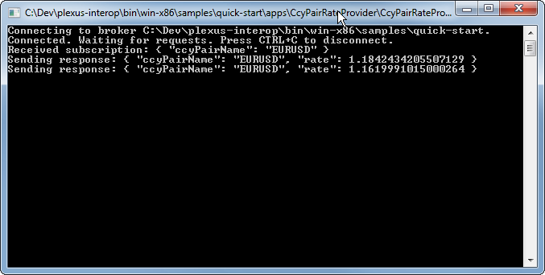

Getting Started
Overview
The Plexus Interop project aims to define an open standard for desktop application interoperability and provides reference implementation of this standard. It formalizes connections between applications within a single user session on client desktop through a central broker.
The main goal is to enable development of extensible workflows connecting independent apps developed by different organizations in different technologies (.NET, Web, Java, Python, etc.) by passing relevant context (structured data objects) between those apps.
Although the industry is moving towards containerized desktop applications, Plexus Interop recognizes that much of the application landscape is not yet tied to containers and is architecturally agnostic of container implementation. Separating interoperability from the container provides notable advantages: different containers can be leveraged in the same workflow, and launched applications residing outside of containers can participate in interop activities.
Technically speaking, Plexus Interop is a metadata-centric language-agnostic desktop app-to-app interoperability framework with an extensible model for launching new instances of desktop applications on demand. Its extensibility is based on open standards which are essential parts of the project. The architecture is based around central broker providing hub-and-spoke connectivity between apps and brokering strongly-typed RPC-style calls between them. The broker has a connection to an Application Lifecycle Manager (or Launcher) which is capable of creating new instances of apps based on the their runtime-metadata (e.g. container type, launch command, command line parameters) defined in a registry.
Features
-
Communicate across desktop applications. Allows communication between apps running in different processes, developed by different teams, and in different programming languages.
-
Decouple desktop apps from each other and discover services dynamically. All interop calls are going through the central broker which works as a mediator decoupling apps from each other. Apps can discover each other in run time using different search criteria.
-
Launch apps on demand. Interop broker tracks the lifecycle of desktop applications, i.e. it knows whether app is running or not and can launch app when required.
-
Define strongly-typed interop APIs. Reference implementation uses popular Google Protobuf format for defining APIs and serializing messages. Strong-typing and using of industry-wide standard allows easy integration between different apps.
-
Store APIs in central repository, control their usage and evolution. All API definitions, as well as explicit per-app declaration of provided and consumed services, are supposed to be stored in the central interop repository. Central repository allows defining standards for communicating apps and common services on user desktop, granular control on usage and evolution of APIs.
-
Use different messaging patterns. Supports request-response RPC pattern for common cases, as well as broadcast and bi-directional streaming patterns for more complex scenarios.
-
Easy deploy and distribute into enterprise environments. Deployment is very simple, does not require administrative permissions, supports all major enterprise operating systems and terminal services.
-
Communicate securely using different transports. Uses local-only communication channels. Two transports are supported at the moment: "websockets" transport best suited for web apps and "named pipes" best suited for desktop apps.
-
Extend where required. Can be adjusted to your needs via extension points. It’s possible to introduce new interop transport and serialization protocols, support custom authentication and authorization, different app startup flows and new programming languages.
See Guides section for the more detailed description of what is Plexus Interop and how it works.
Repository structure
Plexus Interop repository consist of the following main sections:
-
desktop - Interop Broker, .NET Interop Client and sample apps implemented in C# using .NET Core 2.0
-
web - Web Interop Client and sample apps implemented in TypeScript
-
dsl - Protobuf and Plexus Interop grammar parsers, validators and code-generators implemented using Xtext framework
-
docs - project documentation implemented in AsciiDoc format using Asciidoctor processor
-
protocol - definitions of Plexus Interop internal protocol messages in Protobuf format
-
samples - sample interop metadata
How to build
To build Plexus Interop components on your machine clone the repository and run Gradle build command:
git clone https://github.com/finos-plexus/plexus-interop.git
cd plexus-interop
gradlew build --console plain --no-daemonBuild artifacts are saved into bin directory :
-
win-x86/broker- binaries of interop broker -
win-x86/samples- sample apps -
win-x86/sdk- code generator tool -
docs- documentation in HTML format -
nuget- .NET NuGet packages to be used in apps
Sample apps
.NET/web interoperability sample
This sample demonstrates interoperability calls between .NET Core console apps and web app running in Electron. As an example let us test how request-response and discovery work:
-
Build samples - see How to build for details
-
Go to
bin/win-x86/samples/greetingdirectory -
Launch Interop Broker –
LaunchBroker.cmd -
Launch sample "Greeting Client" app –
LaunchGreetingClient.cmd -
Choose “Discovery” option (5) first and then “Greeting from Electron Web app” option from discovery response:

-
Enter some name (e.g. “John”) and press Enter. Broker will launch "Web Greeting Server" app, which is configured to run in Electron container. Once launched the app will show the information about connection and incoming request and will send back a greeting response:

-
"Greeting Client" app should receive the greeting and print it:

-
Now choose Discovery (5) option in "Greeting Client" again and this time select “Greeting from .Net app” option from discovery results.
-
Enter another name, e.g. “Mike” and press enter. Broker will start a ".NET Greeting Server"console app. Once running this app will print information about the incoming request and will send back the greeting:

You may check other call types by choosing other options in the "Greeting Client" app.
How to find sample code
Source code for sample flow is here:
-
Sample Interop Registry - https://github.com/finos-plexus/plexus-interop/tree/master/samples/greeting/registry/
-
.NET Greeting Client - https://github.com/finos-plexus/plexus-interop/master/desktop/src/Plexus.Interop.Samples.GreetingClient/Program.cs
-
.NET Greeting Server - https://github.com/finos-plexus/plexus-interop/tree/master/desktop/src/Plexus.Interop.Samples.GreetingServer/Program.cs
-
Web Greeting Server - https://github.com/finos-plexus/plexus-interop/tree/master/web/packages/web-example/src/greeting/server/Main.ts
-
Electron App Launcher - https://github.com/finos-plexus/plexus-interop/tree/master/web/packages/electron-launcher/src/launcher/
Guides
Quick starts
In this section we will be going through the case of two simple business apps communicating with each other via Plexus Interop:
-
CcyPairRateProvider- an app developed by Vendor A, which provides FX currency pair rates. -
CcyPairRateViewer- an app developed by Vendor B, which allows user to request FX currency pair rates from other apps and see them.
Two most popular cases for interoperability are web and .NET, so the guide is split into two independent sections:
Both guides describe the same flow/API, so if you want to experiment with interop between different technologies - just combine the samples, e.g. take web implementation of CcyPairRateViewer from the first guide and
.NET implementation of CcyPairRateProvider from the second guide and run them together.
Prerequisites
You will need the following software:
-
Windows 7+
-
Node.js 6+ with npm 3+ for Web quick start
-
.NET Core SDK 2.0+ for .NET quick start
You also need to build Plexus Interop components if you have not done it yet. See How to build for details.
Quick Start - Web
In this guide both consumer and provider are written in TypeScript language and run in Electron container.
Run example
-
Switch to the
bin\win-x86\quick-startdirectory and start a new broker instance:cd bin\win-x86\samples\quick-start start plexus brokerBroker requires two types of metadata to run:
-
app registry - declares all available apps and how to launch them. App Lifecycle Manager component uses this registry to launch apps when requested.
-
interop registry - declares messages, services, and which of them are provided or consumed by each application. Broker uses this information to provide discovery capabilities and validate invocations between apps.
By default Interop Broker reads metadata from
apps.jsonandinterop.jsonfiles located inmetadatasub-directory within broker’s working directory. In real world scenarios, broker will load registries from remote server instead of local files, because remote server may provide many capabilities like (admin UI, central governance, audit trail, entitlements, etc.). To load metadata from other data sources you need to implement your own registry provider (documentation on that is in progress).Each Interop Broker instance is identified by its working directory. It is possible to run many brokers in parallel, but instance must run in a separate directory.
-
-
Launch
WebCcyPairRateViewerapp:plexus launch vendor_b.fx.WebCcyPairRateViewerplexus launchcommand sends a request to App Lifecycle Manager to make some app up and running. App Lifecycle Manager is a part of the broker that tracks which apps are alive and can create a new instance of an app if there is no live one. Different app types may have very different life cycles, so App Lifecycle Manager launches new app instances and tracks their status using App Launchers. -
App window will open. In this window you should see "Connected to Broker" message.
-
Enter a currency pair name (e.g. "EURUSD") and click "Get Rate" button:

When app A calls an interop service hosted in app B the following steps happen:
-
Broker searches for the already connected live service providers
-
If service provider is offline, broker inspects App Registry and sends a launch request to App Lifecycle Manager.
-
While app is starting broker waits (with some timeout)
-
Service provider within the launched app connects to the broker and registers itself
-
Broker sends interop message to the service provider
See Invocation Workflow section for details.
This guide uses a sample
ElectronAppLauncher. To understand how to build custom launchers see How to write custom app launcher. -
-
Broker starts "CCY Rate Provider" app and forwards request to it. App shows information about the request and sends back a random value.
 -
The "CCY Rate Viewer" app shows the rate received from provider:

Modify example
Let us add real-time updates of FX rates instead of a single response. For this we have to change the contract between two apps, provide updated interop metadata to the broker, update apps and run them again.
Modify metadata
First we need to modify interop registry and pass updated metadata to the broker.
-
Open
registry/fx/ccy_pair_rate_service.protofile and add a newGetRateStreammethod:/registry/fx/ccy_pair_rate_service.protoservice CcyPairRateService { rpc GetRate(CcyPair) returns (CcyPairRate); // new rpc call returning real-time notification stream rpc GetRateStream(CcyPair) returns (stream CcyPairRate); } -
Open
registry/vendor_a/fx/web_ccy_pair_rate_provider.interopfile and change provided method toGetRateStream:/registry/vendor_a/fx/web_ccy_pair_rate_provider.interoppackage vendor_a.fx; import "fx/ccy_pair_rate_service.proto"; application WebCcyPairRateProvider { provides .fx.CcyPairRateService { GetRateStream [title = "Web Provider - Get Rate Stream"]; } } -
Open
registry/vendor_b/fx/web_ccy_pair_rate_viewer.interopfile and change consumed method toGetRateStream:/registry/vendor_b/fx/web_ccy_pair_rate_viewer.interoppackage vendor_b.fx; import "fx/ccy_pair_rate_service.proto"; application WebCcyPairRateViewer { consumes .fx.CcyPairRateService { GetRateStream; } } -
To pass the changed metadata to broker, navigate back to
bin\win-x86\samples\quick-startand re-generate metadata using plexusgen tool:java -jar ../../sdk/plexusgen.jar --type=json_meta --baseDir=registry --out=metadataBroker tracks
interop.jsonfile and automatically reloads metadata when the file is changed.
Modify and build provider app
We changed provided service definition, so now we need to re-generate provider’s client and provide implementation for new method:
-
From project root call Plexus Generator tool to re-generate provider’s client code:
java -jar bin/win-x86/sdk/plexusgen.jar --type=ts --baseDir=./bin/win-x86/samples/quick-start/registry --input=web_ccy_pair_rate_provider.interop --out=./web/packages/ccy-pair-rate-provider/src/gen --protoc=./web/node_modules/.bin/pbts.cmdPlexus Generator tool will generate interfaces and proxy classes from service descriptions. It uses ProtobufJs to generate message definitions from
.protofiles. -
Open
web/packages/ccy-pair-rate-provider/src/index.tsfile and changeonGetRateimplementation toonGetRateStream:new WebCcyPairRateProviderClientBuilder() .withClientDetails({ applicationId: "vendor_a.fx.WebCcyPairRateProvider", applicationInstanceId: instanceId }) .withTransportConnectionProvider(() => new WebSocketConnectionFactory(new WebSocket(webSocketUrl)).connect()) .withCcyPairRateServiceInvocationsHandler({ onGetRateStream: async (invocationContext, ccyPair, hostClient) => { log(`Received Streaming request for ${ccyPair.ccyPairName} Rate`); // send several rates and complete the invocation let count = 5; const sendResponse = () => { if (count) { count--; hostClient.next(rateService.getRate(ccyPair.ccyPairName)); setTimeout(sendResponse, 1000); } else { hostClient.complete(); } }; sendResponse(); } }) .connect() .then(() => log("Connected to Broker")) .catch(e => console.error("Connection failure", e));In this example provider will send five rates and then will close the stream.
-
Navigate to
web/packages/ccy-pair-rate-providerdirectory and runnpm run buildto re-build the app.
Modify and build consumer app
Because interop method was changed we also need to re-generate consumer’s client code and modify how response is handled:
-
From project root call Plexus Generator tools to re-generate consumer’s client code:
java -jar bin/win-x86/sdk/plexusgen.jar --type=ts --baseDir=./bin/win-x86/samples/quick-start/registry --input=web_ccy_pair_rate_viewer.interop --out=./web/packages/ccy-pair-rate-viewer/src/gen --protoc=./web/node_modules/.bin/pbts.cmd -
Open
web/packages/ccy-pair-rate-viewer/src/index.tsand update code to invoke streaminggetRateStreamaction:new WebCcyPairRateViewerClientBuilder() .withClientDetails({ applicationId: "vendor_b.fx.WebCcyPairRateViewer", applicationInstanceId: instanceId }) .withTransportConnectionProvider( () => new WebSocketConnectionFactory(new WebSocket(webSocketUrl)).connect() ) .connect() .then(async (rateViewerClient: WebCcyPairRateViewerClient) => { log("Connected to Broker"); window.getRate = async () => { const ccyPair = (document.getElementById("ccyPair") as HTMLInputElement).value; log(`Sending request for ${ccyPair}`); rateViewerClient.getCcyPairRateServiceProxy() .getRateStream({ccyPairName: ccyPair}, { next: ccyRate => { log(`Received rate ${ccyRate.ccyPairName} - ${ccyRate.rate}`); }, complete: () => log("Completed"), error: () => log("Error received") }); }; }); -
Navigate to
web/packages/ccy-pair-rate-viewerand runnpm run buildto re-build the app.
Launch the modified example
-
Navigate to
bin\win-x86\samples\quick-start -
Launch the viewer app:
plexus launch vendor_b.fx.WebCcyPairRateViewer -
In the opened window enter a currency pair name, e.g.
EURUSDand pressEnter:
-
Broker starts the provider app and redirects request to it:
 -
The viewer app shows five rates received from provider and a message that reply stream was closed:

Quick Start - .NET
In this guide both consumer and provider are .NET console apps written in C# language running under .NET Core.
Run example
-
Switch to the
bin\win-x86\quick-startdirectory and start a new broker instance:cd bin\win-x86\samples\quick-start start plexus brokerBroker requires two types of metadata to run:
-
app registry - declares all available apps and how to launch them. App Lifecycle Manager component uses this registry to launch apps when requested.
-
interop registry - declares messages, services, and which of them are provided or consumed by each application. Broker uses this information to provide discovery capabilities and validate invocations between apps.
By default Interop Broker reads metadata from
apps.jsonandinterop.jsonfiles located inmetadatasub-directory within broker’s working directory. In real world scenarios, broker will load registries from remote server instead of local files, because remote server may provide many capabilities like (admin UI, central governance, audit trail, entitlements, etc.). To load metadata from other data sources you need to implement your own registry provider (documentation on that is in progress).Each Interop Broker instance is identified by its working directory. It is possible to run many brokers in parallel, but instance must run in a separate directory.
-
-
Launch "CCY Pair Viewer" app:
plexus launch vendor_b.fx.CcyPairRateViewerplexus launchcommand sends a request to App Lifecycle Manager to make some app up and running. App Lifecycle Manager is a part of the broker that tracks which apps are alive and can create a new instance of an app if there is no live one. Different app types may have very different life cycles, so App Lifecycle Manager launches new app instances and tracks their status using App Launchers.In this example apps are launched using built-in
NativeAppLauncherwhich run apps as standard OS processes. -
In the opened console window enter a currency pair name, e.g.
EURUSDand pressEnter:When app A calls an interop service hosted in app B the following steps happen:
-
Broker searches for the already connected live service providers
-
If service provider is offline, broker inspects App Registry and sends a launch request to App Lifecycle Manager.
-
While app is starting broker waits (with some timeout)
-
Service provider within the launched app connects to the broker and registers itself
-
Broker sends interop message to the service provider
See Invocation Workflow section for details.
Note that
CcyPairRateProviderapp uses the sameNativeAppLauncheras the viewer app. -
-
Once
CcyPairRateProviderapp is up and running it registers in Broker, receives the message from viewer app and sends back a random rate:
-
The viewer app shows the rate received from provider:

Modify example
Let us add real-time updates of FX rates instead of a single response. For this we have to change the contract between two apps, provide updated interop metadata to the broker, update apps and run them again.
Modify metadata
First we need to modify interop registry and pass updated metadata to the broker.
-
Open
registry/fx/ccy_pair_rate_service.protofile and add newGetRateStreammethod:/registry/fx/ccy_pair_rate_service.protoservice CcyPairRateService { rpc GetRate(CcyPair) returns (CcyPairRate); // new rpc call returning real-time notification stream rpc GetRateStream(CcyPair) returns (stream CcyPairRate); } -
Open
registry/vendor_a/fx/ccy_pair_rate_provider.interopfile and change provided method toGetRateStream:/registry/vendor_a/fx/ccy_pair_rate_provider.interoppackage vendor_a.fx; import "fx/ccy_pair_rate_service.proto"; application CcyPairRateProvider { provides .fx.CcyPairRateService { GetRateStream [title = ".NET Provider - Get Rate Stream"]; } } -
Open
registry/vendor_b/fx/ccy_pair_rate_viewer.interopfile and change consumed method toGetRateStream:/registry/vendor_b/fx/ccy_pair_rate_viewer.interoppackage vendor_b.fx; import "fx/ccy_pair_rate_service.proto"; application CcyPairRateViewer { consumes .fx.CcyPairRateService { GetRateStream; } } -
To pass updated metadata to the broker, go back to
bin\win-x86\samples\quick-startdirectory and re-generate metadata using Plexus Generator tool:java -jar ../../sdk/plexusgen.jar --type=json_meta --baseDir=registry --out=metadataBroker tracks
interop.jsonfile and automatically reloads metadata file is modified.
Modify and build provider app
Now let us update CcyPairRateProvider app to provide real-time notifications.
-
Navigate to the
desktop/src/Plexus.Interop.Samples.CcyPairRateProviderdirectory and callGenerate.cmdPlexus Generator tool generates interfaces and proxy classes from service descriptions. Internally it uses protobuf compiler to generate C# message definitions from
.protofiles. -
Open
Program.csfile and update the code to provide implementation of the new method:/desktop/src/Plexus.Interop.Samples.CcyPairRateProvider/Program.csnamespace Plexus.Interop.Samples.CcyPairRateProvider { using Plexus.Interop.Samples.CcyPairRateProvider.Generated; using System; using System.IO; using System.Threading.Tasks; using Plexus.Channels; public sealed class Program : CcyPairRateProviderClient.ICcyPairRateServiceImpl { private readonly Random _random = new Random(); public static void Main(string[] args) { new Program().MainAsync(args).GetAwaiter().GetResult(); } public async Task MainAsync(string[] args) { // Read broker working dir specified either in the first // command line argument or in environment variable, // or just use current working directory. var brokerWorkingDir = args.Length > 0 ? args[0] : EnvironmentHelper.GetBrokerWorkingDir() ?? Directory.GetCurrentDirectory(); // Creating client and connecting to broker Console.WriteLine("Connecting to broker {0}", brokerWorkingDir); var client = new CcyPairRateProviderClient(this, setup => setup.WithBrokerWorkingDir(brokerWorkingDir)); await client.ConnectAsync(); Console.WriteLine("Connected. Waiting for requests. Press CTRL+C to disconnect."); Console.CancelKeyPress += (sender, eventArgs) => { eventArgs.Cancel = true; client.Disconnect(); }; // Awaiting completion await client.Completion; Console.WriteLine("Disconnected."); } // Implementation of server streaming method GetRateStream public async Task GetRateStream( CcyPair request, IWritableChannel<CcyPairRate> responseStream, MethodCallContext context) { Console.WriteLine("Received subscription: {0}", request); try { do { var response = GetCcyPairRate(request); Console.WriteLine("Sending response: {0}", response); await responseStream.TryWriteAsync(response, context.CancellationToken); await Task.Delay(_random.Next(1000, 3000), context.CancellationToken); } while (!context.CancellationToken.IsCancellationRequested); } catch (OperationCanceledException) when (context.CancellationToken.IsCancellationRequested) { // Ignoring cancellation exception } Console.WriteLine("Subscription completed"); } private CcyPairRate GetCcyPairRate(CcyPair request) { CcyPairRate response; switch (request.CcyPairName) { case "EURUSD": response = new CcyPairRate { CcyPairName = "EURUSD", Rate = 1.15 + 0.05 * _random.NextDouble() }; break; case "EURGBP": response = new CcyPairRate { CcyPairName = "EURGBP", Rate = 0.87 + 0.05 * _random.NextDouble() }; break; default: throw new ArgumentOutOfRangeException($"Unknown currency pair: {request.CcyPairName}"); } return response; } } } -
Re-build the app by executing the following command:
dotnet build
Modify and build consumer app
Now let us update "CCY Pair Rate Viewer" app to handle multiple incoming real-time updates.
-
Navigate to the
desktop/src/Plexus.Interop.Samples.CcyPairRateViewerdirectory and callGenerate.cmd -
Navigate to the
desktop/src/Plexus.Interop.Samples.CcyPairRateViewerdirectory, openProgram.csfile and update the code to the following:/desktop/src/Plexus.Interop.Samples.CcyPairRateViewer/Program.csnamespace Plexus.Interop.Samples.CcyPairRateViewer { using Plexus.Interop.Samples.CcyPairRateViewer.Generated; using System; using System.IO; using System.Threading.Tasks; public sealed class Program { public static void Main(string[] args) { new Program().MainAsync(args).GetAwaiter().GetResult(); } public async Task MainAsync(string[] args) { // Read broker working dir specified either in the first // command line argument or in environment variable, // or just use current working directory. var brokerWorkingDir = args.Length > 0 ? args[0] : EnvironmentHelper.GetBrokerWorkingDir() ?? Directory.GetCurrentDirectory(); // Creating client and connecting to broker Console.WriteLine("Connecting to broker {0}", brokerWorkingDir); var client = new CcyPairRateViewerClient(setup => setup.WithBrokerWorkingDir(brokerWorkingDir)); await client.ConnectAsync(); Console.WriteLine("Connected"); while (true) { Console.Write("Enter currency pair (e.g. \"EURUSD\") or press Enter to exit: "); var ccyPairName = Console.ReadLine(); if (string.IsNullOrEmpty(ccyPairName)) { break; } // Requesting ccy pair rate from another app var request = new CcyPair { CcyPairName = ccyPairName }; var call = client.CcyPairRateService.GetRateStream(request); ConsoleCancelEventHandler cancelHandler = null; cancelHandler = (sender, eventArgs) => { Console.CancelKeyPress -= cancelHandler; Console.WriteLine("Unsubscribing"); eventArgs.Cancel = true; call.Cancel(); }; Console.CancelKeyPress += cancelHandler; await call.ResponseStream .ConsumeAsync(item => { Console.WriteLine("Notification received: {0}", (object)item); Console.WriteLine("Press CTRL+C to unscubscribe"); }) .IgnoreAnyCancellation(); } Console.WriteLine("Disconnecting"); await client.DisconnectAsync(); Console.WriteLine("Disconnected"); } } } -
Re-build the app by executing the following command:
dotnet build
Launch the modified example
-
Launch "CCY Pair Rate Viewer":
plexus launch vendor_b.fx.CcyPairRateViewer -
In the opened console window enter a currency pair name, e.g.
EURUSDand pressEnter:
-
Broker starts "CCY Pair Rate Provider" app and redirects request to it:
 -
The viewer app will show rate updates coming from provider until you press
CTRL-C:
Concepts
Like many other Remote Procedure Call (RPC) systems, Plexus Interop is based around the idea of defining a service by specifying the methods that can be called remotely with their parameters and return types.
There are 4 possible types of RPC methods in Plexus Interop mirroring types supported by gRPC:
-
Unary call - consumer send a request, provider receives it, handles, and sends response back to the consumer.
-
Consumer streaming call - consumer sends one or many requests, provider sends only one response back.
-
Provider streaming call - consumer sends one request, provider sends many responses back.
-
Bidirectional streaming call - consumer sends many requests, provider sends many responses.
However Plexus Interop goes beyond what most RPC frameworks do:
-
Plexus tracks the lifecycle of desktop apps, i.e. it knows if app is running or not and can launch app on demand.
-
Plexus allows to define custom App Launchers, which allow fully custom installation, startup and shutdown flows.
-
Each app specified which interop services it provides and consumes. This way it is easy to track API usage and evolve APIs.
-
Central Broker decouples apps from each other and allows dynamic discovery of service providers.
Discovery flow
Step one: find API implementations:

Step two: select between API implementations
Step three: call specific API implementer:

High-level architecture

Key elements
-
App Registry - catalogue of apps, interop components within apps and app launchers
-
App Launcher - component responsible for starting new app instances and tracking their lifecycle. Different app launchers should be used for different app technologies (e.g. .NET Launcher, Java Launcher, Python Launcher) or custom startup flows (e.g. launcher that knows how to download app from a special binary storage within organization).
-
App Lifecycle Manager - central component that tracks all live app instances. All apps are started via App Lifecycle Managers, which selects an appropriate App Launcher and uses this Launcher to create a new instance of the app.
-
Interop API Definitions - text files with formal definitions of interop APIs between apps, which define messages, services and applications:
-
Message - logical record of information, containing a series of name-value pairs (fields). Plexus uses Protobuf v3 protocol for defining and serializing messages.
-
Service - set of related methods that can be provided by one or many applications. Plexus uses Protobuf v3 definition language syntax for defining services.
-
Application - corresponds to a desktop application. Each application can provide services to other applications and consume services provided by other applications.
-
-
Interop Broker - responsible for managing interop sessions, routing messages between apps and discovery mechanisms. If message was sent to component that is not running yet then Broker asks App Launcher to start the app using mapping between components and apps.
-
Interop Registry - provides Interop Broker with all information about services, messages and connections between apps in run-time. Interop Registry is populated from approved Interop API Definitions.
-
App Registry - provides App Lifecycle Manager with all information about how to launch apps: app launcher and launcher-specific parameters.
-
Interop Transport - responsible for delivering serialized messages between Interop Broker and client interop APIs
-
Client Service API - client library that app uses to provide some interop service or to consume interop service provided by another app. Service API is generated from interop API definitions. Depending on app technology API can be generated either in run-time (e.g. JavaScript) or in compile time (e.g. DLLs for .NET). Compile-time generation uses Plexus SDK tools.
Interop Broker
Interop broker is the central component working as a hub for all interop communications:

Interop Broker has several responsibilities:
-
It reads full information about all interoperability APIs from Interop Registry
-
It routes interop API calls and replies between app instances
-
It tracks which interop API implementations are alive. If some app calls a service which is not online yet then Broker launches service provider app via App Lifecycle Manager.
Note that Interop Broker is not talking with apps directly - it relies on Interop Transport, which can deliver serialized messages across app boundaries.
Invocation workflow
Here is the most interesting scenario, which includes app launch:
-
When Desktop Plexus is started it creates transport endpoints and start listen for incoming connections.
-
Plexus Interop launches app A and provides it with the configuration on how to connect to transport servers.
-
App A initializes Client APIs and connects to Broker. Client and Broker performs handshake after which Broker registers the connected instance start tracking it.
Now user wants to send some information from app A into another app B available in Plexus. Here is what happens in app A:
-
App A creates an input message instance using builder provided by Client API library
-
App A calls service method in Client API and passes created message instance
-
Client API performs several steps:
-
Creates header which contains information about the invocation: sender, receiver, service name, method name etc.
-
Serializes the created header via Protobuf and submits into Interop Transport for sending
-
Serializes the created input message into binary stream using Protobuf and submits into Interop Transport for sending
-
Transport splits the incoming message stream into one or more frames and send them to the pipe
-
Plexus Host process is doing the following:
-
Interop Transport reads binary stream from transport and re-constructs headers and messages from received frames.
-
When new header arrives Transport starts to build new message blob from frames related to the message
-
Once header and message blobs are constructed, Transport passes them into Interop Broker
-
Interop Broker deserializes header blob and checks information about message receiver
-
If target app is not running then Interop Broker sends "launch app" event to App Launcher with the ID of app B and waits
-
App Launcher starts target app B. After launch app B will:
-
Register callback for process API calls
-
Register its instance in Interop Broker (same as app A)
-
-
Interop Broker detects that app B is live and sends message into it using Transport
Now that message is sent to app B via transport remaining part is easy:
-
Interop Transport within app B restores message blob and passes it into Client API
-
Client API deserializes blob into strongly typed message and invokes callback registered by app B code
-
App B processes the message and sends reply using same approach as original request, but in reverse direction
Plexus Interop integration workflow
Typical development cycle for integration with Plexus Interop:

-
Clone existing interop API definitions (metadata) from remote central registry
-
Define new interop metadata locally
-
Generate client interop APIs from local metadata
-
Integrate generated interop APIs into the app
-
Publish new metadata into local "sandbox" registry
-
Test interop flow via Plexus Studio:
-
If app provides service then you can call it from Plexus Studio.
-
If app consumes some service then you can check that app sends correct interop messages into Plexus Studio.
-
Repeat steps 2-5 until you are fully happy with API and its implementation.
-
-
Deploy new version of the app with new interop flow
-
Publish interop metadata into central registry for approval
-
Once new metadata is approved it should get into central Interop Registry and become available to all users
-
Test flow between apps end-to-end in real environment
How to write custom App Launcher
App Launchers are just applications which implements the special contract called interop.AppLauncherService.
To implement custom app launcher need to do the following:
-
Define new application in interop registry that provides service
interop.AppLauncherServiceservice tointerop.AppLifecycleManager. See example below. -
Generate client API for the application.
-
Implement methods defined by
interop.AppLauncherService. -
Register the new app in App Registry. Use built-in
interop.NativeAppLauncheras a launcher for it. See example below. -
Use environment variables to get broker location and instance id for connection.
How does this work? If app launcher is not started yet, Interop Broker will start it and pass environment variables "PLEXUS_APP_INSTANCE_ID" and "PLEXUS_BROKER_WORKING_DIR". First variable should be used in connection message 'AppInstanceId' property to let broker know the connecting instance is the one it is waiting for. The second variable defines broker location. Transports should check the directory "%PLEXUS_BROKER_WORKING_DIR%\servers\<servername>" to get connectivity details. For example, websocket server connection URL is specified in "%PLEXUS_BROKER_WORKING_DIR%\servers\ws-v1\address".
Example definition of ElectronAppLauncher
syntax = "proto3";
package interop;
import "interop/UniqueId.proto";
service AppLauncherService {
rpc Launch(AppLaunchRequest) returns (AppLaunchResponse);
}
message AppLaunchRequest {
string app_id = 1;
string launch_params_json = 2;
}
message AppLaunchResponse {
UniqueId app_instance_id = 1;
}import "interop/AppLauncherService.proto";
package interop;
application ElectronAppLauncher {
provides AppLauncherService to interop.AppLifecycleManager { Launch; }
}{
"id": "interop.ElectronAppLauncher",
"displayName": "Electron App Launcher",
"launcherId": "interop.NativeAppLauncher",
"launcherParams": {
"cmd": "../ElectronAppLauncher.cmd",
"args": ""
}
}System requirements
Supported Windows versions
-
Windows 7 SP1
-
Windows 8.1
-
Windows 10
-
Windows Server 2008 R2 SP1
-
Windows Server 2012 SP1
-
Windows Server 2012 R2 SP1
-
Windows Server 2016
Supported Mac OS X versions
Not supported for now. Will be added soon.
Reference
Components Overview

Plexus Interop consist of the following main components:
-
Broker - a process running on user desktop which handles application connections and routes calls between them
-
Client - technology-specific library used by applications to communicate with broker
-
Interop DSL - language to define connections between applications and associated tooling for parsing, validation and code-generation of application-specific client APIs from these definitions
To participate in interop each application need to define itself in Interop Registry and auto-generate its specific client API using code-generation tool. Broker also uses Interop Registry to validate and route calls.
Both client and broker use transport protocol and interop protocol to communicate with each other. Broker can support one or more interop and transport protocols. Currently it supports version 1 of interop protocol and 2 versions of transport protocols: named-pipe-based and websocket-based.
Concepts and Definitions
This section contains overview diagram which shows Plexus Interop layers on example of 2 applications interoperating through broker. Below this diagram you can find brief descriptions for each of the presented concepts.
Application
Application is a program on client desktop which can be started and stopped. Each application can provide (i.e. implement) services and/or consume (i.e. call) services provided by other applications.
Application is not necessary correspond to OS process. It can be a part of process, or consist of many processes.
Examples of applications:
-
A program with GUI
-
A program without GUI, e.g. Windows Service
-
A part of process, e.g. a plugin running in a big container application consisting of many isolated plugins
-
A web window or worker running in Electron.js or other web container
Application Instance
Application instance is a running (started) application. There can be many instances of the same application running simultaneously on client desktop.
Interop Registry
Interop registry defines strong-typed contracts between applications on client desktop using a special human-readable interface definition language.
It consist of definitions of the following types:
-
Message definitions represent types of data which can be sent between applications.
-
Service definitions represent named sets of related methods which can be implemented by applications. Service can contain one or many methods and each method is defined by its name, type, and types of request and response.
-
Application definitions declare which service implementations are provided and which consumed by each application participating in desktop interop.
Broker loads Interop Registry from server on launch and re-loads it on changes. This allows adding new services to user desktops in runtime.
Interop Registry enables dynamic service discovery. Applications are only connected to broker and call services rather than other applications. This concept is similar to dynamic injection containers available in almost any language and framework, but here it is used on a higher level. Broker dynamically searches for a suitable service implementation across all the applications in Interop Registry. Because of this applications are always de-coupled from each other, they don’t need to know about counter-parties implementation details and they can release separately.
Broker
Broker is the central part of desktop interop. Broker accepts, authenticates and tracks application (client) connections, validates and routes calls between them, and optionally can trigger launch of application on demand through App Lifecycle Manager.
Broker listens to one or many wire protocol servers to accept client connections. Applications can use any of the listened wire protocol implementations to establish connection with broker.
Application instance is considered "online" while it has at least one established connection with broker. Broker uniquely identifies each connection and tracks it, so it always knows which apps are online in any given time.
Online applications instances can send protocol requests to broker to discover or call service implementations provided by other applications. Broker validates and routes such calls to target applications according to interop registry.
Application Lifecycle Manager
Component inside Broker which tracks active connections and can trigger launch of an application on demand by sending a request to the appropriate Application Launcher.
Application Launcher
Application launchers are applications which can launch other applications. This concept was introduced to allow easy implementation of custom launch workflows which can be very different. E.g. web application is loaded in a browser window, native application started as a new OS process and plugin is loaded by its container application. In addition each vendor usually has custom launch steps like auto-updating or accepting terms & conditions. Such steps can also be implemented in a vendor-specific app launcher.
On method call broker can either route the call to an online application instance or trigger launch of a new instance. There are several strategies of routing launch requests from Broker to App Launcher, called Launch Behaviors:
-
Default - Pass invocation to already running provider instance or launch new one if no online providers found.
-
Always - Create new app instance on each invocation.
-
Never - Pass invocation to already running instance, return error if no online providers found.
Launch Behaviors can be specified per action in Interop Registry, please see example below:
application RateProviderApp {
provides CcyPairBroadcastService {
option launch_on_call = ALWAYS;
GetRate;
}
}Each application can specify its Launcher in Interop Registry and broker will delegate launch to the specified Launcher.
Client
Client is a library used by application to communicate with interop broker. Client can be implemented in any language, it communicates with broker using interop protocol, transport protocol and wire protocol.
Client Message Marshaller
Pluggable component used by client library to serialize and deserialize request/response messages.
Generated Client API
Application-specific and language-specific API which is auto-generated by code-generation tool based on Interop Registry.
For each consumed service a proxy class is generated which allows invocation of service methods.
const rate: ICcyPairRate = client.getCcyRateService().getRate({ ccyPairName: 'EURUSD' });For each provided service an interface is generated which should be implemented to provide implementations for service methods.
clientBuilder.withCcyRateServiceProvider({
onGetRate: (invocattionContext: InvocationContext, pair: ICcyPair) => {
return internalService.getRate(pair);
}
});Generic Client API
Technology-specific API implementation which provides core functionality of interop client. It converts method calls to interop protocol messages and vice versa according to specification and uses pluggable transport implementation to send/receive messages to/from broker.
Currently .NET and TypeScript/JavaScript libraries are provided as a part of this repository. Please see Web API definition with examples below.
Send Unary Request
Executes Point-to-Point invocation, client receives response from server.
sendUnaryRequest<Req, Res>(
invocationInfo: InvocationDescriptor,
requestMessage: Req,
responseHandler: ValueHandler<Res>): Promise<InvocationClient>;Parameters
| invocationInfo |
details of remote action to execute |
| requestMessage |
simple object representing request details |
| responseHandler |
response/error handler |
Returns
| invocationClient |
provides ability to cancel invocation, to notificate remote side that response no longer required |
Examples
-
Invoke remote action on any available provider:
const invocationInfo: InvocationDescriptor = {
serviceId: 'CcyRateService',
methodId: 'GetRate'
};
const requestMessage = { ccyPairName: 'EURUSD' };
client.sendUnaryRequest<ICcyPair, ICcyPairRate>(invocationInfo, requestMessage, {
value: pairRate => console.log(`Received rate ${pairRate.rate}`),
error: e => console.error('Failed to get rate', e)
});-
Invoke remote action on particular provider:
const invocationInfo: InvocationDescriptor = {
serviceId: 'CcyRateService',
methodId: 'GetRate',
// provider's app id, defined in metadata
applicationId: 'RateProvider',
// optional, if we want to pass invocation to particular running instance
connectionId: remoteAppGuid
};
// same as in example above ...Register Unary Handler
Registers handler for provided unary method.
onUnary<Req, Res>(
serviceInfo: ServiceInfo,
handler: UnaryInvocationHandler<Req, Res>): void;Parameters
| serviceInfo |
implemented service details |
| handler |
method details and provided implementation |
Examples
-
Register unary invocation handler
const serviceInfo = { serviceId: 'CcyRateService' }; clientBuilder.onUnary<ICcyPair, ICcyPairRate>(serviceInfo, { methodId: 'GetRate', handle: async (invocationContext: MethodInvocationContext, request: ICcyPair) => { const rate: ICcyPairRate = await internalRateService.getRate(request.ccyPairName); return rate; } };
Discover Methods
Discovers available method invocation handlers.
discoverMethod(discoveryRequest: MethodDiscoveryRequest): Promise<MethodDiscoveryResponse>;Parameters
| discoveryRequest |
discover criteria, defined in client protocol. All fields are optional, providing flexibility to search under different criteria. |
Returns
| discoveryResponse |
discovered remote method implementations if any, containing extensive information on method provider. Discovered method instances can be passed to corresponding invocation methods. |
Examples
-
Discover by input message and invoke first available implementation:
const discoveryResponse = await client.discoverMethod({
inputMessageId: 'plexus.interop.CcyPair',
});
client.sendUnaryRequest<ICcyPair, ICcyPairRate>(
discoveryResponse.methods[0],
{ ccyPairName: 'EURUSD' },
{
value: pairRate => console.log(`Received rate ${pairRate.rate}`),
error: e => console.error('Failed to get rate', e)
}
);| Discovery Request supports various of options, you can use any combinations of them. |
-
Discover by response type:
const discoveryResponse = await client.discoverMethod({
outputMessageId: 'plexus.interop.CcyPairRate'
});-
Discover only online method handlers:
const discoveryResponse = await client.discoverMethod({
outputMessageId: 'plexus.interop.CcyPairRate',
discoveryMode: DiscoveryMode.Online
});-
Discover by method reference:
const discoveryResponse = await client.discoverMethod({
consumedMethod: {
consumedService: {
serviceId: 'CcyRateService'
},
methodId: 'GetRate'
}
});-
Implementing "broadcast" communication using discovery.
Using discoveryMethod as low level API we can easily implement sending of broadcast messages using following steps:
-
Define method with
Emptyreturn type to be handled by listener componentsservice CcyPairBroadcastService { rpc onCcyPairRate (CcyPairRate) returns (Empty); } -
Setup all listener apps as provider of this action. Also we can define specific Provider instances or even companies we would like to listen events from:
application ListenerApp { // listen to message from any provider provides CcyPairBroadcastService {onCcyPairRate;} // or setup listener for providers from specific namespace // provides CcyPairBroadcastService to com.acme.* {onCcyPairRate;} } -
Setup broadcast publisher app to consume this action
application RateProviderApp { consumes CcyPairBroadcastService {onCcyPairRate;} } -
Use online discovery to publish new rate to all connected consumers:
async function broadcast(rate: CcyPairRate): Promise<void> { const discoveryResponse = await client.discoverMethod({ consumedMethod: { consumedService: { serviceId: 'CcyPairBroadcastService' }, methodId: 'onCcyPairRate' }, discoveryMode: DiscoveryMode.Online }); const responseHandler = { value: () => console.log('Delivered') }; discoveryResponse.methods.forEach(method => { client.sendUnaryRequest<ICcyPairRate, Empty>( method, rate, responseHandler); }); }
Discover Services
Discovers available service implementations. Provides ability to use few methods from particular provider together.
discoverService(discoveryRequest: ServiceDiscoveryRequest): Promise<ServiceDiscoveryResponse>;Parameters
| discoveryRequest |
discover criteria, defined in client protocol. All fields are optional, providing flexibility to search under different criteria. |
Returns
| discoveryResponse |
discovered remote service implementations if any, containing extensive information on method provider. Discovered method instances can be passed to corresponding invocation methods. |
Examples
-
Discover service, lookup for pair of methods to be used together:
const discoveryResponse = client.discoverService({ consumedService: { serviceId: 'CcyRateService' } }); // choose service implementation, by provider id/service alias/other details const service: DiscoveredService = serviceDiscoveryResponse .services .find(s => providedService.applicationId === 'RateProviderApp'); // choose required methods and invoke them as described above in 'Discover Methods' examples const getRateMethod = service.methods.find(m => m.methodId === 'GetRate'); const getRateStreamMethod = service.methods.find(m => m.methodId === 'GetRateStream'); -
Discover only online service providers
const discoveryResponse = client.discoverService({ consumedService: { serviceId: 'CcyRateService' }, discoveryMode: DiscoveryMode.Online });
Send Server Streaming Request
Executes Server Streaming invocation, client receives stream of messages from server.
sendServerStreamingRequest<Req, Res>(
invocationInfo: InvocationDescriptor,
requestMessage: Req,
responseObserver: InvocationObserver<Res>): Promise<InvocationClient>;Parameters
| invocationInfo |
details of remote action to execute |
| requestMessage |
simple object representing request details |
| responseObserver |
response stream observer |
Returns
| invocationClient |
provides ability to cancel invocation, to notificate remote side that response no longer required |
Examples
-
Receive stream or rates from provider:
const invocationInfo: InvocationDescriptor = { serviceId: 'CcyRateService', methodId: 'GetRateStream' }; const requestMessage = { ccyPairName: 'EURUSD' }; client.sendServerStreamingRequest<ICcyPair, ICcyPairRate>(invocationInfo, requestMessage, { next: pairRate => console.log(`Received rate ${pairRate.rate}`), complete: () => console.log('Invocation completed'), error: e => console.error('Failed to get rate', e) });
Register Server Streaming Handler
Registers handler for provided server streaming method.
onServerStreaming<Req, Res>(
serviceInfo: ServiceInfo,
handler: ServerStreamingInvocationHandler<Req, Res>): void;Parameters
| serviceInfo |
implemented service details |
| handler |
method details and provided implementation |
Examples
-
Register stream handler:
const serviceInfo = { serviceId: 'CcyRateService' }; clientBuilder.onServerStreaming<ICcyPair, ICcyPairRate>(serviceInfo, { methodId: 'GetRateStream', handle: async (invocationContext: MethodInvocationContext, request: ICcyPair, hostClient: StreamingInvocationClient<ICcyPairRate>) => { const rate: ICcyPairRate = await internalRateService.getRate(request.ccyPairName); hostClient.next(rate); // send other rate const otherRate: ICcyPairRate = await internalRateService.getRate(request.ccyPairName); hostClient.next(otherRate); // complete streaming hostClient.complete(); } };
Send Bidirectional Streaming Request
Executes Bidirectional Streaming invocation. Client and Server communicates using streams of messages.
sendBidirectionalStreamingRequest<Req, Res>(
invocationInfo: InvocationDescriptor,
responseObserver: InvocationObserver<Res>): Promise<StreamingInvocationClient<Req>>;Parameters
| invocationInfo |
details of remote action to execute |
| responseObserver |
response stream observer |
Returns
| streamingInvocationClient |
invocation client, provides ability to send stream of messages, complete or cancel invocation. |
Examples
-
Bidirectional communication, client updates server on requested ccy pairs and receives stream of rates from server:
const invocationInfo: InvocationDescriptor = { serviceId: 'CcyRateService', methodId: 'GetRateBidiStream' }; const invocation = await client.sendBidirectionalStreamingRequest<ICcyPair, ICcyPairRate>( invocationInfo, { next: pairRate => console.log(`Received rate ${pairRate.rate}`), streamCompleted: () => console.log('Remote stream completed'), complete: () => console.log('Invocation completed'), error: e => console.error('Failed to get rate', e) }); invocation.next({ ccyPairName: 'EURUSD' }); // ask for other ccy pair rates later invocation.next({ ccyPairName: 'EURGBP' }); // notify server that no more pairs be requested invocation.complete();
Register Bidirectional Streaming Handler
Registers handler for provided bidirectional streaming method.
onBidiStreaming<Req, Res>(
serviceInfo: ServiceInfo,
handler: BidiStreamingInvocationHandler<Req, Res>): void;Parameters
| serviceInfo |
implemented service details |
| handler |
method details and provided implementation |
Examples
-
Register bidirectional handler:
const serviceInfo = { serviceId: 'CcyRateService' }; clientBuilder.onBidiStreaming<ICcyPair, ICcyPairRate>(serviceInfo, { methodId: 'GetRateStream', handle: (invocationContext: MethodInvocationContext, hostClient: StreamingInvocationClient<ICcyPairRate>) => { const ccyPairs = []; // send rate for each requested pair every second setInterval(() => { ccyPairs.forEach(pair => { hostClient.next(internalRateService.getRate(pair) }); }, 1000); // client's stream observer return { next: ccyPair => ccyPairs.push(ccyPair) }; } };
Interop Protocol
Interop Protocol is a language for conversations between client and broker through transport channels.
Each interop protocol conversation is performed within a separate transport channel.
Protocol describes 4 main types of conversations:
-
Connect handshake - the first conversation performed after new transport connection is established
-
Disconnect handshake - the last conversation performed before transport connection is closed
-
Discovery - request from application to broker to get the available services filtered by specific parameters
-
Method call - request from an application to call a method implemented in another application
Transport Protocol
Transport protocol is used to send binary messages between client and broker and is responsible for multiplexing and de-multiplexing many channels through a single connection.
Transport Connection
Transport connection is an abstraction of established connectivity between client and broker.
Connection is initiated by client and accepted by broker.
Transport implementation must detect if the connection is still alive, e.g. by sending heartbeats or using lower-level wire protocol capabilities for this, and raise "disconnected" event on both sides when connectivity is lost.
Transport Channel
Transport channel is a logical unit of data exchange through connection. It consist of request and response byte streams on both sides of connection.
Channel opening can be initiated by both client and broker. It’s only possible to write and read bytes to/from an opened channel. Many channels can be simultaneously opened in the context of the same connection.
For example, for each call from one application to another, 2 transport channels are opened. First is opened by source application to broker. Second is opened by broker to target application. All the data sent in context of the call is transferred through these 2 channels.
Bytes written to request stream on one side of channel can be read in exactly the same order from response stream on another side. As soon as one of the sides sent all the data it closes request stream. This triggers response stream completion event on another side as soon as all the sent bytes consumed.
Channel considered "Completed" when both sides completed request stream and consumed all the bytes from response stream. Additionally it can be terminated by either client or broker with either "Failed" or "Canceled" status in case of exception.
Wire Protocol
Wire protocol is an abstraction for sending bytes through cross-process boundaries. Any existing stream-based network protocol such as named pipes or websockets can be used as a wire protocol for Plexus Interop.
Broker listens to many wire protocols simultaneously on different addresses, so each client can choose which one to use. Usually for native apps it’s more convenient to use named pipes, but for web apps it’s more convenient to use websockets, because most of browsers has built-in websockets support.
Wire Connection
Wire connection is an abstraction of established cross-process connection.
App Registry
Application registry is a JSON array where each item has following properties:
| Name | Type | Description | Example |
|---|---|---|---|
id |
string |
Unique key representing the application |
|
displayName |
string |
Human readable display name of the application |
|
launcherId |
string |
A reference to another application in the registry which starts this app |
|
launcherParams |
object |
Application launcher specific object which contains data required by launcher to launch the specific application |
|
Find below a JSON schema for the application registry
{
"type": "array",
"items": {
"type": "object",
"properties": {
"id": {
"type": "string",
"required": true
},
"displayName": {
"type": "string",
"required": false
},
"launcherId": {
"type": "string",
"required": false
},
"launcherParams": {
"type": "object",
"required": false,
"additionalProperties": true
}
}
}
}Interop Registry
Messages and Services
For messages and services definition Plexus uses Google Protobuf v3 format. For example:
package fx;
message CcyPair {
string ccyPairName = 1;
}
message CcyPairRate {
string ccyPairName = 1;
double rate = 2;
}
service CcyPairRateService {
rpc GetRate (CcyPair) returns (CcyPairRate);
}
You can find Protobuf specification here - https://developers.google.com/protocol-buffers/docs/proto3
Application Interop Manifests
Application interop manifests are defined using special .interop format. Here is an example:
package vendorA.fx; (1)
import "fx/CcyPairRateService.proto"; (2)
application CcyPairRateProvider { (3)
provides fx.CcyPairRateService to vendorA.* { GetRate; } (4)
consumes interop.samples.GreetingService from interop.samples.GreetingServer { ShowGreeting; } (5)
consumes interop.samples.EchoService from interop.* { Echo; } (6)
}| 1 | Define namespace for application |
| 2 | Import services definition that application provides or consumes |
| 3 | Application name |
| 4 | Provided service definition. In this case app only allows using this implementation for other apps in package "vendorA". |
| 5 | Consumed service definition |
| 6 | One more consumed service definition. |
Consumes
Consumes notation defines to which Service methods this component can execute. This Methods can be provided by several components and they will be accessible by discovery for component client code. We explicitly ask to specify exact methods to support schema evolution and corner cases where one component produce not the full set of service methods
Imagine the following scenario:
-
There is "ServiceA" fully implemented and produced by two components "ComponentA" and "ComponentB"
-
We add new additional method to "ServiceA"
-
"ComponentA" implements this method, where "ComponentB" is still in progress
Thus exact method import will allow plexus to check if some methods used anywhere, it will allow to check if method is produced by both components and give error if not.
Provides
We ask to provide explicit list of methods for consume and provide notations to support service evolutions and changes. Plexus will be able to check if what set of methods of specific Service implemented in concrete Component and validate if all mapping are correct and consistent.